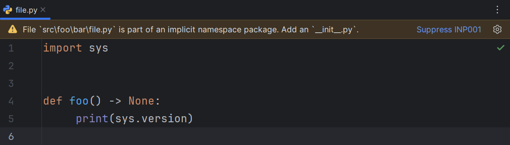
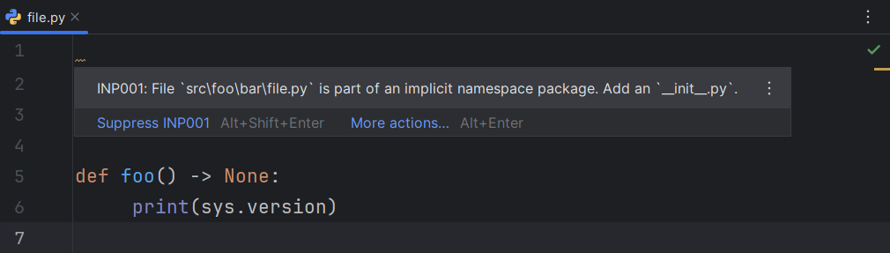
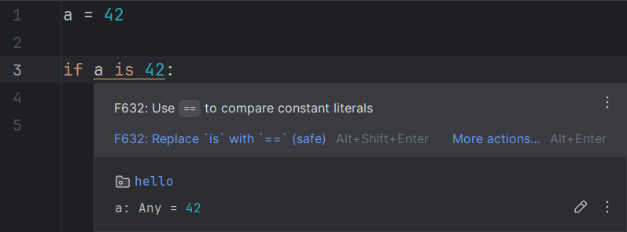
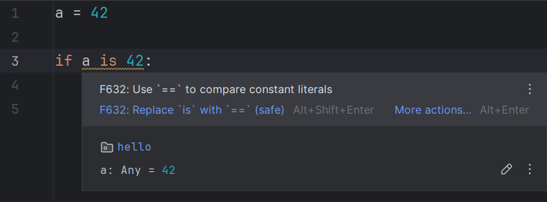
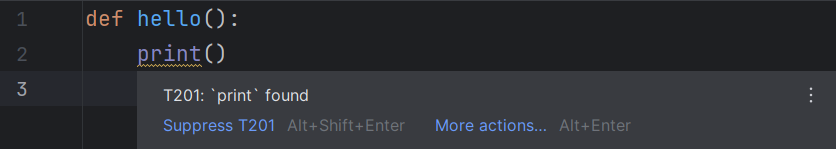
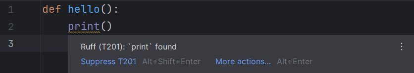
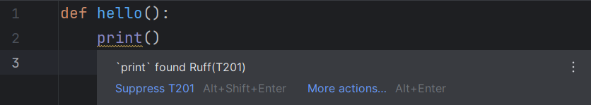

Ruff
Executable#
The Ruff executable to be used for all operations.
If it is not provided, RyeCharm will attempt to find one in the following order:
- Any
ruffexecutable found in PATH. - Any
ruffexecutable found in the project's virtual environment. - The
ruffexecutable found under Rye'sselfenvironment.
Cross-platform executable resolution#
If this option is enabled and the executable is specified as a relative path, it will be resolved against the project's interpreter directory with its extension removed.
This is useful if Ruff is a development dependency and is expected to always be installed, regardless of the user's platform.
Configuration file#
If specified, this file will be passed to Ruff on every invocation.
This corresponds to the --config command-line option
and the configuration language server setting.
Running mode#
The manner in which the executable is invoked.
Default: Command line
See Running modes for more information.
Main functionalities#
Linting#
Whether linting errors (diagnostics) should be shown.
This corresponds to the lint.enable language server setting.
Default: true
See Linting for more information.
Report syntax errors#
Whether diagnostics for syntax errors should be shown.
This corresponds to the showSyntaxErrors language server setting.
Default: false
Show editor banner for file-level diagnostics#
Whether diagnostics for the entire file (e.g., INP001)
should be shown at the very top of the editor for that file as a banner.
Default: false


Render tooltips#
Whether error messages should be rendered as Markdown.
Default: false


Tooltip format#
The format in which tooltips are displayed.
Default: A123: Message



Quick fixes#
Whether quick fixes (code actions) should be suggested.
Default: true
Fix all safely fixable violations#
Whether a quick fix to fix all safely fixable violations should be suggested.
This corresponds to the fixAll language server setting.
Default: true
Organize imports#
Whether a quick fix to organize the imports section should be suggested.
This corresponds to the organizeImports language server setting.
Default: true
Disable rule for line#
Whether a quick fix to disable a given rule for the current line should be suggested.
This corresponds to the codeAction.disableRuleComment.enable
language server setting.
Default: true
Fix single violation#
Whether a quick fix specific to the current violation should be suggested.
This corresponds to the codeAction.fixViolation.enable
language server setting.
Default: true
Fix similar violations#
Whether quick fixes to fix violations of the same rule as the current one should be suggested.
Default: true
Offer fixes even when rule is considered unfixable#
Whether a quick fix specific to the current violation should be suggested even if the rule in question is configured to be unfixable.
This is equivalent to running ruff check --fixable ALL.
Default: false
Formatting#
Whether Ruff's formatter should be used instead of the IDE's default formatter.
Default: true
See Formatting for more information.
Run on reformat#
Whether the Reformat Code action should trigger Ruff.
Default: true
Run on optimize imports#
Whether the Optimize Imports action should trigger Ruff.
Default: true
Documentation popups#
Whether documentation popups should be shown.
Default: true
See Documentation for more information.
For rule codes in noqa comments#
Whether documentation popups should be shown when
noqa codes in Python comments are hovered.
Default: true
For rule codes in TOML files#
Whether documentation popups should be shown when rule codes in rule selector arrays are hovered.
Default: true
For setting keys in TOML files#
Whether documentation popups should be shown when
the keys of the tool.ruff table in the pyproject.toml file
(or top-level keys for ruff.toml/.ruff.toml) are hovered.
Default: true
Log level#
The amount of logs the language server will emit.
This corresponds to the logLevel language server setting.
Default: Information
Log file#
The file to which the logs will be written.
This corresponds to the logFile language server setting.
Run on save#
Whether Ruff should be run on files before saving.
If both "fix problems" and "format" are enabled, they are run in that order.
Project files only#
Whether only files belong to the current project should be run on.
Default: true
Format#
Whether Ruff should format the file before it is saved.
Default: false
Fix violations#
Whether Ruff should try to fix all safely fixable violations in the file before it is saved.
Default: false
Other settings#
Suggest executable#
Whether RyeCharm should automatically find a potential Ruff executable and suggest setting that as the executable for the current project on some events.
This functionality can also be triggered as an action.
On project open#
Whether a potential executable should be suggested when a project is opened.
Default: true
On packages change#
Whether a potential executable should be suggested when a package is installed via the Python Packages tool window.
Default: true
Folding#
Settings related to code folding functionalities.
Fold single-rule selectors by default#
Whether single-rule selectors should be initially displayed in their folded forms (i.e., their names).
Note that such selectors are always manually foldable, regardless of this setting.
Default: true
Advanced settings#
Automatically restart servers on configuration change#
Whether the running servers should be restarted immediately when the Apply/OK buttons are clicked.
Default: true